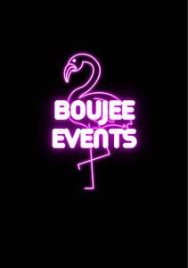

Trade Mark Journal No.2025/038 19 September 2025
UK00004261022 8 September 2025 (41)

- Class 41
- Entertainment; Theatre entertainment; Entertainment services; Education, entertainment and sport services; Production of live entertainment; Road shows being entertainment services; Television entertainment; Cinema entertainment; Musical entertainment; Interactive entertainment; Music entertainment services; Television entertainment services; Education, entertainment and sports; Sports entertainment services; Radio entertainment; Cabaret entertainment services; Musical entertainment services; Live entertainment; Tv entertainment services; Interactive entertainment services; Nightclub services [entertainment]; Entertainment information; Information (Entertainment -); On-line entertainment; Gaming services for entertainment purposes; Booking of entertainment; Entertainment services in the nature of arranging social entertainment events; Radio entertainment services; Corporate entertainment services; Live entertainment services; Popular entertainment services; Hospitality services (entertainment); Cinematographic entertainment services; Corporate hospitality (entertainment); Entertainment services in the nature of organizing social entertainment events; Provision of musical entertainment; Audio entertainment services; Entertainment club services; Club entertainment services; Club services [entertainment]; Video entertainment services; Jazz music entertainment services; Provision of entertainment; Animated musical entertainment services; Television and radio entertainment services; Radio and television entertainment services; Entertainment in the nature of theater productions; Organising of entertainment; Artistic management of entertainment venues; Entertainment services for children; Television and radio entertainment; Radio and television entertainment; Entertainment services in the form of cinema performances; Gaming machine entertainment services; Radio entertainment production; Entertainment in the nature of dinner theater productions; Entertainment, sporting and cultural activities; Organisation of musical entertainment; Online entertainment services; Services for the production of entertainment in the form of television; Production of television entertainment features; Live entertainment production services; Children's entertainment services; Online interactive entertainment; Arranging of musical entertainment; Entertainment in the nature of television news shows; Entertainment booking services; Production of audio entertainment; Lighting productions for entertainment purposes; Musical group entertainment services; Provision of live entertainment; Internet radio entertainment services; Hosting of entertainment events; Entertainment information services; Production of live entertainment events; Booking of entertainment halls; Arranging of visual entertainment; Video game entertainment services; Arranging of entertainment shows.
Boujee Events Ltd